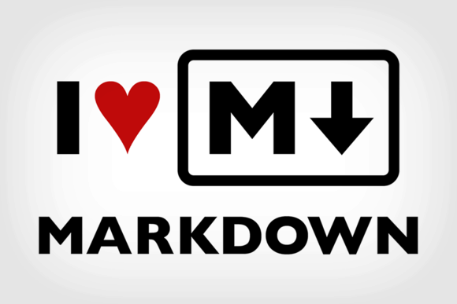

Markdown
Markdown is a lightweight markup language for creating formatted text using a plain-text editor. Markdown is widely used in blogging, instant messaging, online forums, collaborative software, documentation pages, and readme files.
Headers
To create a header, preface the phrase with a hash mark (#). You place the same number of hash marks as the size of the header you want. For example, for a header one, you'd use one hash mark, while for a header three, you'd use three.
## ex. 2 Customer
### ex. 3 Project manager
#### ex. 4 Product owner
##### ex. 5 Developer
###### ex. 6 Technical writerParagraphs
To create paragraphs, use a blank line to separate one or more lines of text. You should not indent paragraphs with spaces or tabs.
**ex. Technical writing is not just about understanding technical information and recording it in a document.**
**Technical writing takes high-level information and processes it into digestible content for a specific audience.**Line Breaks
To create a line break , end a line with two or more spaces, and then type return.
**ex. A technical writer is a professional writer that communications complex information.**
*So what exactly does a technical writer do?*
**They create technical documentation that includes things like instruction manuals, user manuals, journal articles, quick reference guides, and white papers.**Emphasis
- Bold
To bold text, add two asterisks (*) before and after a word or phrase. To bold the middle of a word for emphasis, add two asterisks without spaces around the letters.
ex. **Attention to detail with a creative eye.** - Italic
To italicize text, add one asterisk before and after a word or phrase. To italicize the middle of a word for emphasis, add one asterisk without spaces around the letters.
ex. *Passionate about learning and developing.*
Blockquotes
To create a blockquote, add a > in front of a paragraph.
ex. Mark Zuckerberg believes:
> Some people dream of success... while others wake up and work hard at it.Lists
- Numbered Lists
To create an ordered list, add line items with numbers followed by periods. The numbers don’t have to be in numerical order, but the list should start with the number one.
1. Jira 2. Confluence 3. Brackets 4. Visual Studio Code 5. MadCap Flare 6. Snagit 7. Camtasia 8. MemoQ 9. Oxygen 10. GitHub Desktop - Bullet Lists
To create an unordered list, add asterisks (*) in front of line items.
* Technical communication * Web technologies * HTML * CSS * Technical texts
Images
To add an image, add an exclamation mark (!), followed by alt text in brackets, and the path or URL to the image asset in parentheses. You can optionally add a title after the URL in the parentheses.
Links
- Linking Images
To add a link to an image, enclose the Markdown for the image in brackets, and then add the link in parentheses.
 - Linking URL
To create a link, enclose the link text in brackets and then follow it immediately with the URL in parentheses.
[Visit GitHub!](www.github.com) - Linking to another
file
[Additional content](Visual Studio Code.md)
Tables
To add a table, use three or more hyphens (---) to create each column’s header, and use pipes (|) to separate each column. You can optionally add pipes on either end of the table.
| header 1 | header 2 |
| -------- | -------- |
| course 1 | course 2 |
| lesson 1 | lesson 2 |Code
To indicate a span of code, wrap it with backtick quotes (`). Unlike a pre-formatted code block, a code span indicates code within a normal paragraph.
`x=7`To include a literal backtick character within a code span, you can use multiple backticks as the opening and closing delimiters.
```
ex. x=7;
y=17;
z=x+y;
```